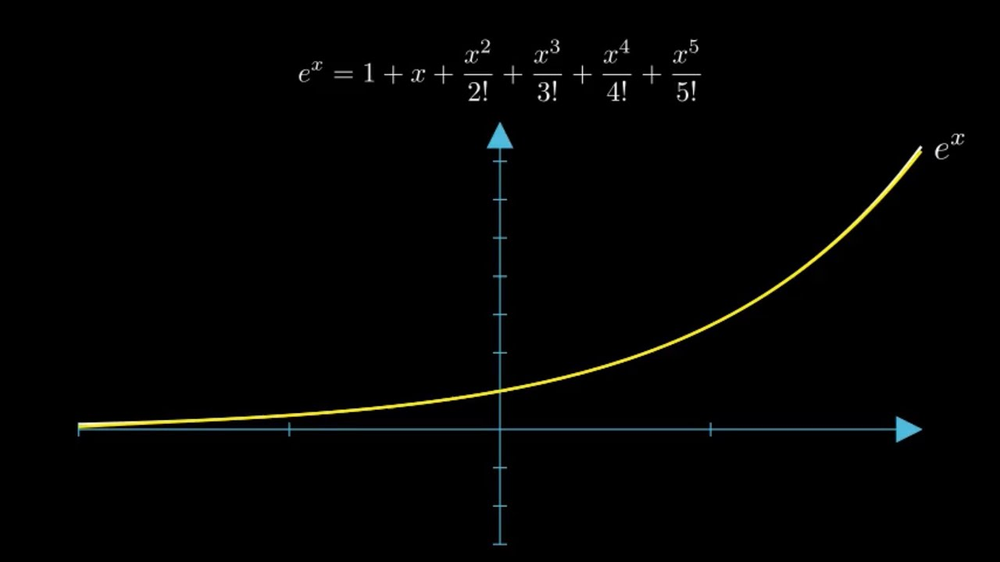

Animation / Mathematics
Euler’s Identity
The problemEuler’s identity is elegant on paper, but its relationship to exponential motion can feel abstract without a visual model.
What I built
A short mathematical animation that turns Euler’s identity into a visual narrative.
How it works
Equations, axes and changing geometry reveal how exponential and circular ideas connect.
What I learned
Motion can communicate mathematical structure faster than notation alone.